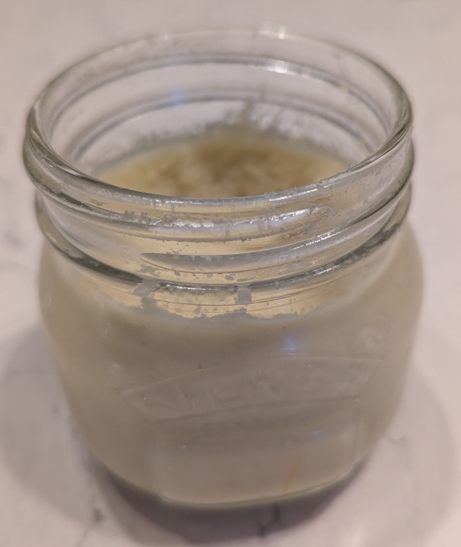

Garlic Ginger Paste
 Makes about 250ml
Makes about 250ml Vegetarian/Vegan
Vegetarian/Vegan
A staple of Indian and Asian recipes. Keeps for months in the fridge

125ggarlic cloves, peeled125groot ginger, peeled and chopped into cm cubes1 tsprock salt or coarse sea salt2 tbspvegetable or other neutral oil
Place all in a blender and grind until paste is smooth.
Transfer to a clean, dry jar and keep in the fridge for up to 4 weeks.